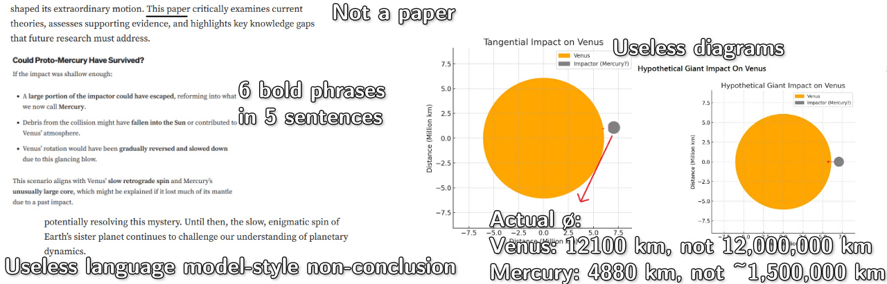
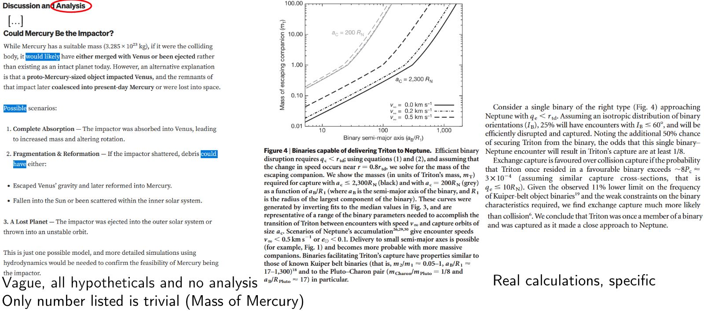

The Internet's AI Infestation
Contents#
- Motivation
- Example 1: "Deep" Research on Retrograde Rotation
- Example 2: Telescope recommendations
- Example 3: Fake Gaming Articles
- Identifying Internet Content
- Personal opinion and notes
Motivation#
I've been working on learning more about language models lately, curious about all the hype. But, as I think about the topic more, I have become a bit concerned about the proliferation of AI-generated content online, and what it might do to the usability and quality of information on the internet long-term.
We'll review some examples of AI misinformation around science and video gaming. Then, I'll go over what I consider to be more and less reliable ways of figuring out what's good or not.
Example 1: "Deep" Research on Retrograde Rotation#
To test a bit of ChatGPT's deep research function myself, I tried asking it to write on the scientific consensus regarding Venus' retrograde rotation. What should we expect from it?
Deep research is OpenAI's next agent that can do work for you independently—you give it a prompt, and ChatGPT will find, analyze, and synthesize hundreds of online sources to create a comprehensive report at the level of a research analyst. Powered by a version of the upcoming OpenAI o3 model that’s optimized for web browsing and data analysis, it leverages reasoning to search, interpret, and analyze massive amounts of text, images, and PDFs on the internet, pivoting as needed in reaction to information it encounters.
Emphasis mine. That sounds impressive! However, as I started reading through what it produced, one bit stood out to me from its "report:"
Computer simulations support this: for example, Agnor & Hamilton (2006) showed a sufficiently large glancing blow could reverse Venus’s rotation without requiring an enormous Moon-forming event
Curiously, its citation is not to anything by Agnor & Hamilton - instead, it links some Medium post. No worries, right? Scrolling down there gives us a more full citation - "Agnor, C. B., & Hamilton, D. P. (2006). The Origin of Venus' Unusual Rotation. Nature, 441(7094), 192–194."
But... that's still weird. Searching for this paper isn't turning up much. Let's try looking up one of the authors - here's a list of Hamilton's publications. Scroll down to 2006: "Agnor, C.B. and D.P. Hamilton 2006. Neptune's Capture of Triton by Binary-Planet Gravitational Encounter. Nature 441, 192–194." That title doesn't match at all! And, as that site is so kind as to even link the real paper, we can confirm Venus isn't mentioned once!
We can also go back to the Medium article and notice other strong hints of AI generation - horrific abuse of bold text, spaced em dashes all over, lists with bold headings, a vague/inconclusive conclusion. The author (if they're even a real person) isn't even an astronomer, scientist, or anyone with the credentials to write on the subject!
So we have AI-generated Medium articles being picked up and used for "research" by language models. Not only that, but these "deep research" reports practically come out pre-formatted to throw on your website to farm traffic. Why pay a human writer when this thing gives you enough text to place ads around, for free? This actively undermines the internet's reliability, making it harder users to trust what they read. If you thought that AI searching was the savior to Google searching becoming less useful, you might want to reconsider.
Checking on that Medium author#
To be a little more sure I'm not jumping the gun off a single bad sourcing, let's check the rest of their references:
- Reference 2 appears to be real.
- Reference 3 has the wrong title ("moment of inertia of Venus", not "Interior Structure of Venus").
- Reference 4 looks pretty fake - there's something by Roger Phillips about Venus in 1992, but the title and other authors don't match.
- Reference 5 claims Barras, C. (instead of Bob Yirka) wrote this article (PDF) on March 30 (instead of March 26). It's not referenced in the article.
This all reads like a series of AI hallucinations - the model may have some concept of these papers, but they are not represented enough in its training to consistently, precisely, reproduce information about them. It also certainly doesn't help that the page describes itself as a "paper" despite not being published in an actual journal. Oh, and their figures seem to imply Venus has a diameter of a little over 10 million km, around 0.08 AU or 8 times the diameter of the sun, while communicating absolutely no useful information. It misdefines retrograde rotation as a planet rotating opposite its orbital motion, rather than opposite the rotation direction of its host star.

All that, and ChatGPT cited that Medium article four times in its report - more than any other source! Full PDF report it generated, for your reference. The rest of its sourcing seems fine enough, but this really is a catastrophic error.
Example 2: Telescope recommendations#
With stars on the mind, I thought I'd test another, more concrete, query - how does it do if asked to research telescope options? Here's its full report. I asked for two main use cases: planetary observation (being able to see details of Mars' surface, bands on Jupiter, that kind of thing) and deep sky astrophotography (galaxies, Messier objects). All under $5000.
Report oddities#
Some of these can depend on your preferences, so it's hard to call them critical flaws. I'll note them anyways, as I still don't like its presentation of various aspects.
- Claim: "Alt-azimuth mounts can be used (no field rotation issue over a few minutes)"
- For the requirements described, I'd be inclined to call an equatorial mount mandatory (see here - unless pairing the azimuth mount with GoTo tracking, which is not specified here).
- Claim: "A motorized mount is recommended to keep the planet centered for several minutes of video capture." and "[...] whereas planetary video capturing is shorter but still benefits from solid tracking."
- This is odd to factor in, as video capture was not mentioned at all in the requirements or intended uses.
- Claim: "The mount must have GoTo tracking and capacity for your OTA + camera."
- Maybe a nice-to-have, but a stretch to call this a must. A motorized mount without GoTo tracking would also work.
Its section on deep-sky astrophotography focuses on refractors, when reflector telescopes are at least worth mentioning for their ability to gather much more light (see here). Its overall recommendations for planetary viewing seem fine, but it takes a more questionable direction for deep-sky business.
Sources are primarily from Cloudy Nights forums - less evidence of AI hallucinations, but some concerning signs. For example, it adds "As one expert notes," following with a quote from one of those forum posters. It seems to try and fabricate credentials when there are none, to make the report seem more reliable. I'm inclined to dismiss the Skies & Scopes article it uses outright just for this absurd chart.
{kind=link}
The Meade reference#
For example, an 8″ Schmidt–Cassegrain (Celestron C8 or Meade 8″) provides around 2000–2500 mm focal length, which many find fits a modest budget and still shows Jupiter and Saturn well
Winding back, this bit from the first paragraph caught my eye. Meade shut down last year, so you'd be gambling trying to buy their stuff on a secondary market (what do you do if there's a defect)?
Suppose we wanted to find an official or proper source for Meade - especially if we missed that bit of news.
This gives us a few sites that sound like they might be it. I'll spoil the conclusion - they're all fake - so if you do click through, do so with caution. We have:
- Meade Instruments: meade-instruments.com (twice)
- Meade Telescopes: meade-telescopes.com
- Meade Official: meadeofficial.com
Note that the real site, meade.com as listed on Wikipedia, is down. Let's see what the deal is with each of these:
Meade Instruments
All links are to amazon listings with affiliate URLs. The site is really just a single page, with no real specific or useful information. No contact information is provided.
This site only exists to get unsuspecting readers to click through to their amazon links, hopefully making a purchase, so they can take a little money off the top.
Meade Telescopes
This site gives us some articles to check out - the first one I read, on their LX90, is an incredible parody. It drones on and on about nothing, including no less than 20 separate bullet point lists with bold subheadings in precisely the formatting language models love to use. The article wraps up with a stupid non-conclusion: "Whether you’re contemplating your first serious telescope or adding to an existing collection, the Meade LX90 deserves serious consideration. The universe awaits—and the LX90 stands ready to be your guide to its wonders." This is typical of language models, and I can only hope no human would intentionally write something like that. It's less clear what the point of this site is - I'm not seeing much in the way of attempts to inject an affiliate link or take your money.
This site does list some contact information (though the "Follow us" icons are all dead). Rather concerningly, their address is just a random residential home. I imagine it's a completely unrelated person, unlucky enough to have their home used as a dummy address by this impostor.
Meade Official
This one says "official" - surely it's legit, right? Well, they have several articles all published on 27 April - including one on the "Meade Saturn elescope." If that doesn't sell you on their quality, I don't know what will.
As expected, scroll down a bit and you'll find their "Buy On Amazon" links. Or "Buy on Amazn," sometimes. It has some contact information (what's more legit than a hotmail address?), but its address appears to point to an elementary school. Also rather alarming!
In summary
I can't say how far back these fake websites go - but we clearly have a number of them, showing up at or near the top of search results. Sure, it doesn't help that the proper website has vanished, but these scam sites absolutely should not be promoted by search engines. It's likely that generative AI was used in a number of these to help fill out the content and make things look more authentic at a glance.
Example 3: Fake Gaming Articles#
I'm most used to gaming topics, so let's shift worlds and see what else we can uncover.
Master Duel crafting#
I happened to come across this article about Yu-Gi-Oh Master Duel's crafting system on "expertbeacon.com," which caught my eye as I wrote a bit on a similar topic. The article looks normal at first, but things quickly get weird. It says the baseline chances of getting royals (a rare variant card finish) is 1% "of glossy" (wrong), then says you'd expect 1 of 100 total crafts to be royal (likely correct). It says the royal rate from crafting is 5-10% (incredibly wrong).
As we can see, top staples like Borrelsword and Infinite Impermanence are both extremely expensive and essential for competitive play. Cards with such ubiquitous meta impact are always scarce and in-demand. Their royal finishes command insane prices on secondary markets…
Then, abruptly shifting to a completely irrelevant topic, it declares that the rarest and most meta viable card in Master Duel is Borrelsword Dragon, available for the "UR price" of 9000 Gems and a usage rate of 76%. Literally nothing about that is correct. There's no such thing as an "UR price" for a card, particularly in gems - you use crafting points to craft specific cards, and gems to open random packs. That card's usage rate is surely <1%. There is no trading system in the game, and certainly no kind of secondary market for cards. It's not possible for a digital Master Duel card to be scarce.
The conclusion gives away the trick:
And there you have it – an expert breakdown of everything from super rare royal finish odds to crafting strategies and top card valuations. While royals ultimately come down to luck, you can decisively shift the odds.
This article is an AI-generated fake, most likely prompted for something like "An expert breakdown of Master Duel royal rare crafting."
RTX 2050 "review"#
Clicking around to another article on the site indicates this is not a unique instance - take this one on the "RTX 2050", for example. Spoiler: the RTX 2050 doesn't exist. The only card with that name is a laptop-only model, which the article makes no clear mention of. This small note at the end is not nearly enough:
For most gamers, saving an additional $100-200 for an RTX 3050 or RTX 4050 laptop provides substantially better value and longevity.
and even that vague implication is contradicted elsewhere:
PCIe 4.0 x16 interface (compatible with latest motherboards)
A number of the specs are wrong. Its formatting is nonsense (table for benchmarks in some games, vaguely references FPS benchmarks in others). No system information for the benchmarks. The image at the top is AI generated - most simply, note the keyboard layout. The one benchmark number I checked was off by ~20%.
The RTX 2050 being laptop-only makes this fake article stick out like a sore thumb, but we won't always be that lucky. There's nothing stopping someone from AI-generating a review for a more standard card, and you'll have to look closer to see if it's credible.
Identifying Internet Content#
There's never a single guaranteed indicator of an AI-generated comment or post (aside from some lazy copy-paster who included the "Sure! Here's the comment you requested."). The best we can do is look for signs that build confidence one way or another, and for elements that appear out-of-place. Let's go over some of the big hints at the moment (mid 2025), at least in my book.
Content examples#
Hallucinations are often the strongest sign of AI generation. There's naturally a spectrum to these. Some mistakes could be made by a human or by a language model, but certain errors are very rare for humans. Fake citations are a big one - if you're citing something properly, almost always, you'd select the title and copy-paste it (or, in more official contexts, download the provided LaTeX-compatible citation file). I suppose maliciously faked citations also explain this, but either way, you're safe to disregard the contents.
Made-up events, fabricated specifications, logically disconnected arguments, and other such things are common with language models, slightly less common with humans. (See the earlier article on royals, which back-to-back claims royals are 1% of glossies but also 1% of total crafts.) A reasonable person can follow a logical thought process for a long time. A language model will sometimes pick its next token poorly and go off on a wacky adventure.
Language models have certain favorite phrasings. These can change over time and by model. "It's not X, but Y" is a current popular one with ChatGPT. I've seen some Mistral-based models strongly favor presenting a particular fun fact when asked for one at random: Sea Otters will hold hands while asleep, to avoid drifting apart. That one may not show up as much in random internet comments, but it's interesting how often certain bits like that can show up in language model outputs. It helps to build a sense for these if you take some time to play around with language models here and there.
An excessively neutral/"considering all sides" tone is also more common with AIs - people tend to have opinions.
Another context-dependent one, somewhat related, but worth mentioning: specificity.

Language models are less likely to get into the weeds, do specific calculations, and reach well-supported conclusions. If you leave an article feeling like you got some kind of overview of an area, but aren't sure what you really learned or what the point was, that could be a warning sign. Of course, don't trust something just because they're throwing lots of complicated-sounding words or numbers at you. Frauds like Eric Weinstein (with his ""theory"" of geometric unity) will use that in an attempt to appear more knowledgeable.
Styling examples#
En (–) and em (—) dash characters are more work to type than the hyphen (-) on standard keyboards, and most comment forums do not automatically convert hyphens in any context to these. A person could copy-paste the characters from elsewhere, or long-press the hyphen on a mobile keyboard, or something like that, but it's not standard practice.
Before rushing to declare any text containing these to be AI, remember any proper typesetting system will allow for all kinds of dashes to be used. These are completely ordinary in any published novel, textbook, or similar types of works. Language models had to pick up on these from somewhere! It only took me till page 7 of my copy of Dracula to find some: "Being practically on the frontier—for the Borgo Pass leads from it into Bukovina—it has had a very stormy existence[...]," but I'm pretty sure that one was done by a human.
Language models tend to prefer using spaces on each side of their em dashes. This is common in newspaper styles, but most other published works do not use spaces. Weak evidence, but something to consider. (And, on the other hand, I've seen Mistral Small more consistently format them without spaces: like—this.)
I've seen ChatGPT incorrectly use an en dash in place of an em dash (if you missed it earlier, review here). If someone defends their suspicious writing claiming to simply be a dash enthusiast, this error would contradict that. Examples:
- "And there you have it – an expert breakdown[...]"
- "Future missions like NASA’s DAVINCI and VERITAS – which will map Venus’s interior and rotation with unprecedented detail – may provide new clues." (from the ChatGPT "deep research" report on Venus)
There is no style context in which either of these are correct. Still, it's not an absolute sign. This page, for example, is from a fine source and looks normal enough aside from all its dashes being en dashes. Could be a software issue, could be a non-dash-enthusiast. If you find the line length differences hard to spot, you can use sites like this to tell dashes apart.
Bold text is usually poor style, and gets worse the more frequent it is.
It's also just a pain to bold every other word - whether you're typing endless *'s or selecting numerous words and repeatedly clicking the "bold" button.
Many language models have no problems on either of these fronts, so I would consider heavy bold text to be a danger sign.
Example ChatGPT output, where the double asterisks enclose bolded text:
### **Phobos**: * The **larger of Mars’ two moons**. * Named after the Greek god Phobos, the personification of **fear** and **panic**. * Associated with themes of **dread**, isolation, and alien worlds.
Lists with the leading words bolded are also standard language model output:
Here's a list of all 50 U.S. states along with their capitals: 1. **Alabama** – Montgomery 2. **Alaska** – Juneau 3. **Arizona** – Phoenix 4. **Arkansas** – Little Rock [...]
This is a relatively weak indicator, and bold text can easily fall off depending on how the text is copy-pasted and how each site interprets user inputs. Other non-standard characters could be a sign, but only with vastly more caution:
“and”for quotes,’as an apostrophe vs standard keyboard"or'. Extremely unreliable - mobile keyboards, word processing programs, and such can easily auto-interpret"/'into these. A character like"could even be adjusted client-side.- The ellipses character
…rather than just three periods (...). Again, auto-replaced by certain software. - Center dot
·or the times symbol×for multiplication rather than*orx. But these are completely ordinary in math-oriented places.
AI detectors#
These are worthless, disregard. There is no universal "trick" to AI text. Even the indicators given above could easily change over time.
Watermarks injected to language model outputs are not a solution. Malicious actors would be free to use a model/software that avoids these, as would reasonable people simply concerned about their privacy.
Personal opinion#
This article on AI/search/product reviews is also quite interesting. Note again the inability of AI to properly distinguish and evaluate sources.
I hope the danger posed by these kinds of misinformation is self-evident.
As the internet becomes increasingly filled with AI text, it's increasingly important to verify you're communicating with a real human. I strongly recommend against adopting writing styles or formats you see ChatGPT using, or having language models edit your comments. They're likely poor choices on their own merits, and they make it harder to distinguish real human opinions from robotic spam. Posting the output of a language model is not a valuable response to a question. The person asking, if they wanted that, could do so on their own time. It makes it harder to find real people's responses and thoughts.
Now more than ever, it's worth carefully checking citations.
Not just that they sound like citations (that's what language models are good at doing), but check the referenced material actually exists and supports the argument properly.
Consider appending before:2022 or something similar to your searches that don't need recent information.
Despite all this, I've been having some fun tinkering with local large language models lately. It's interesting technology, even if the hype can be a bit overwhelming. I might even have some neat tests to write about on here later. There are absolutely applications for language models. Posting their output online, masquerading as human-written content, is not one of them.
Right now, I see their main value being in domains where correctness doesn't really matter. Maybe you can ask one for an opinion if you can't figure out what to cook for dinner. Perhaps you have two variations of a paragraph for your article, and aren't sure which one is easier to understand. I imagine this will take time to mature, but they could have interesting uses in gaming - like an advanced version of Façade.
Perhaps one day, rather than prioritizing it, search engines could try to identify and downrank AI-generated spam. If they don't, I could see the internet quickly becoming near-impossible to use for genuine, reliable information.
Notes#
- "You're just prompting it wrong." While possibly true in some cases, this is typically a poor defense. Yes, you can get different output from a language model depending on exactly how you prompt it. How do you know if a prompt is good? By checking the response against the actual answer - which, if you already had, defeats the need. If you add more and more leading information into the prompt, at some point, the answer becomes trivial.
- I find it unconvincing to say that people could/should just check the language model output before posting, and then everything's fine. Models generate text in minutes, but it can take hours to fully comb through and pick out all the issues. There's a certain level of poison past which you should just throw out the food and try a different source. From everything I've seen, no language model would be legitimately useful in writing new articles for my site, almost regardless of the implementation.
- Yes, humans can make mistakes. I think there are a few categorical distinctions. Language models tend to write authoritatively regardless of their confidence level, while most reasonable people will add disclaimers as appropriate (see ChatGPT inventing an "expert quote" out of a forum post). Humans might misremember or forget a minor point of a citation; language models will write text that simply sounds like a source. The speed at which these happen is completely different, as well. An article of this length could be generated in just a few minutes on consumer hardware. But, depending on the depth of the topic, a human could easily take anywhere from 2 to 40+ hours on the same task.
- I focus on ChatGPT among the big online/commercial models as it seems to be the most popular such model, and it makes rather big promises on the quality of its "deep research." This by no means is an endorsement of any other models - they will absolutely demonstrate similar issues.
- Language models improving over time won't help the issue much, unless there's a bigger shift. They may hallucinate less often, but their text generation process is inherently hallucinatory. Being able to create more convincing fakes, if anything, could make the situation worse.
- While I have no proper way of proving this to you, these deep research reports were not cherry-picked out of a broader set. The only other research report I have generated had enough errors I've set it aside for a separate article (particularly as those were more issues related to ChatGPT's output, rather than the spread of misinformation online). It does not help ChatGPT's case.